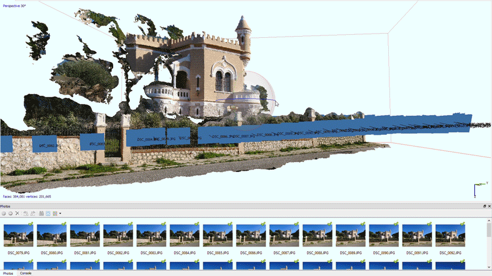
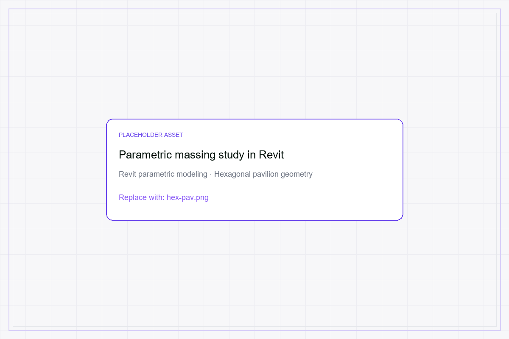
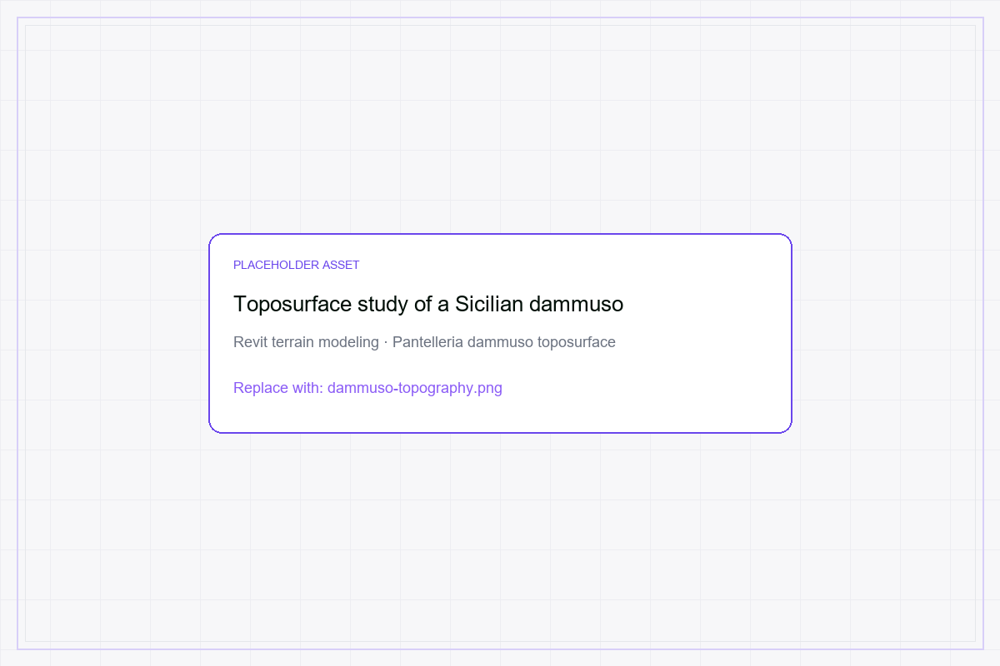
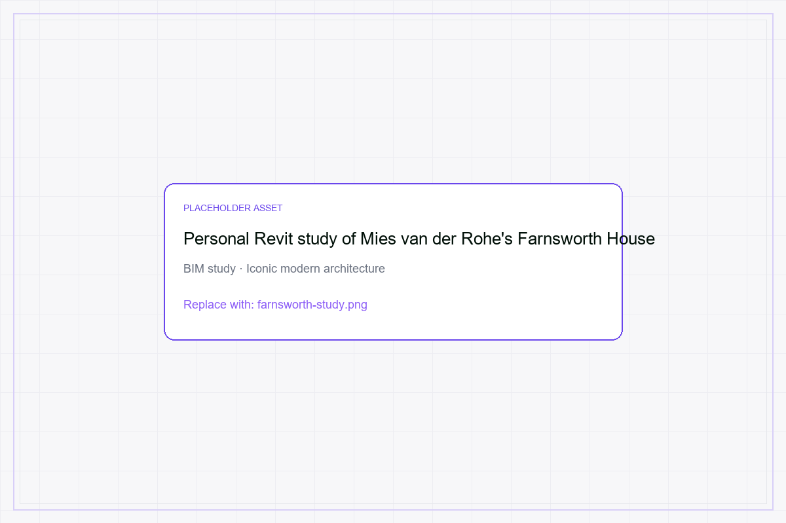
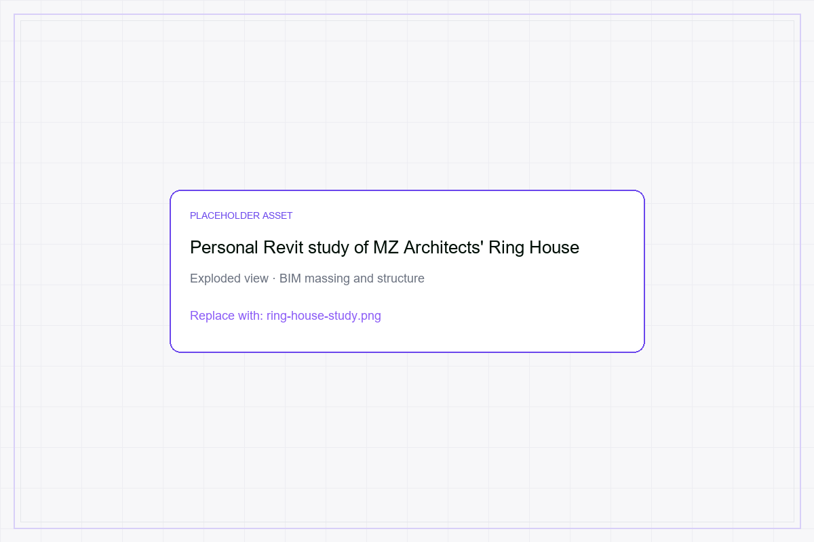
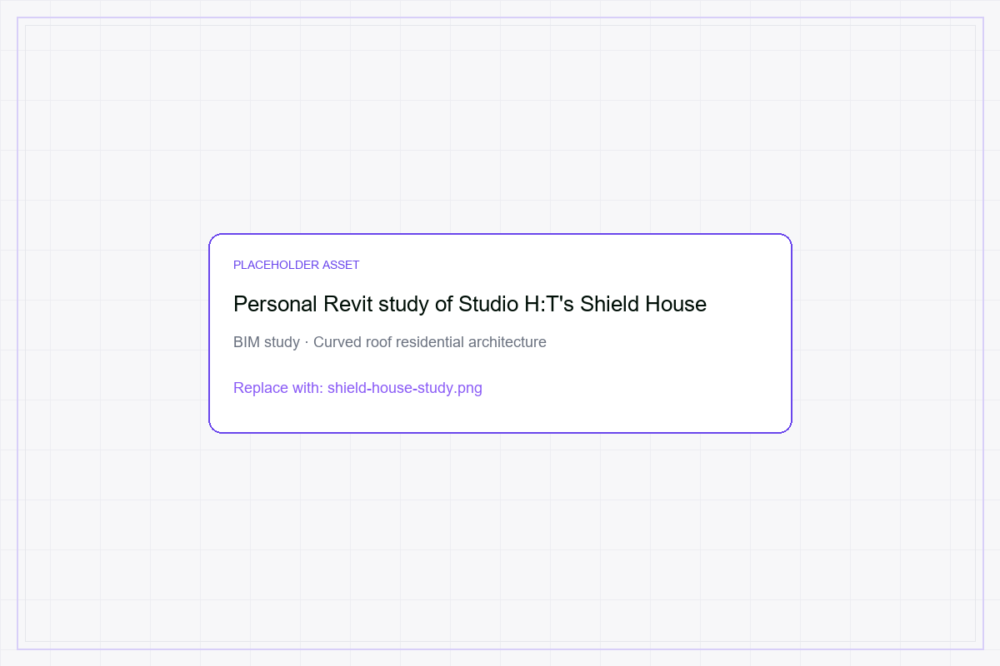

Architecture & BIM (2009–2019)
BSc in Architectural Sciences, University of Palermo (2009–2015). Thesis: "Viridia Sustine – BIM to support Sustainable Design". Revit user since 2013, Revit Architecture certified.
Freelance interior design & BIM (2013–2019): end-to-end renovations (a duplex and an apartment), on-site design implementation for the award-winning "DISPENSA di Giuseppe Costa" restaurant project.
First photogrammetry experiments with Agisoft PhotoScan (2017).






Manufacturing Floor (2020–2021)
CMC Srl, Palermo: Production Analyst & Technical Drafter. CAD/CAM design and prototyping of rail and naval components whose output shipped to Alstom, Fincantieri, Trenitalia, CAF, Hitachi Rail, Saipem, and Titagarh Firema.
NC part programs and CAM execution on Prima Industrie and Cy-laser laser cutting systems and Durma press brakes; cross-functional reference between drafting office and production floor, hands-on with press brakes, laser cutting, column drilling, welding.
The Bridge (2021–today)
Computes Group (2021–2024): CAD/CAM/ERP deployment across 50+ Italian manufacturing SMBs in the supply chain of Fincantieri, Trenitalia, Hitachi Rail, Saipem, ATM Milano.